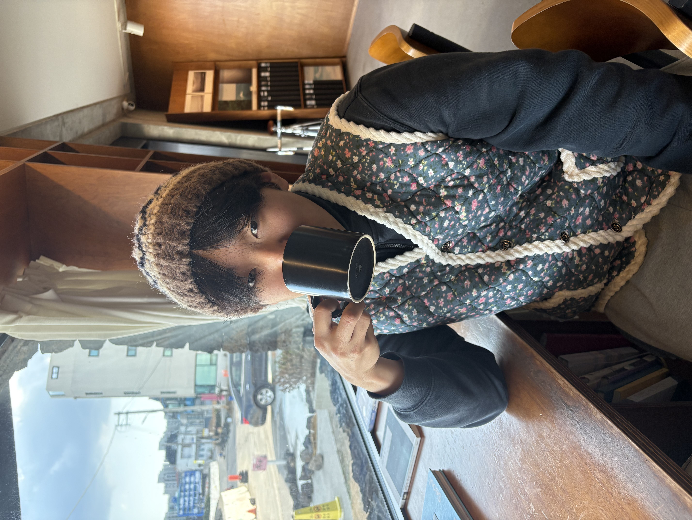

커피 한 잔의 여유 속에서도 시민의 일상을 고민합니다.
데이터 뒤에 숨겨진 사람의 마음을 읽는 정책 전문가, 유호성입니다.

PNU Public Policy '24
부드러운 소통 속에 타인의 어려움에 깊이 공감하며, 더 나은 사회를 위해 기꺼이 헌신하는 따뜻한 리더십을 갖추고 있습니다.
컴퓨터활용능력 1급 / 한국사 1급
현대 사회의 복잡한 문제를 진단하고, 법적·경제적 분석을 통해 실질적인 정책 대안을 설계하는 전문 학문입니다.
헌법과 행정법을 통해 공공성이 갖는 법적 토대를 정립하며 현대 정부 시스템의 작동 원리를 학습합니다.
정책분석평가론과 사회조사방법론(R 프로그래밍)을 활용하여 정교한 정책 대안을 도출하는 전문가적 소양을 기릅니다.
자신의 비전에 따라 특화된 3가지 전문 트랙을 선택하여 최적화된 진로를 설계할 수 있습니다.

국가직/지방직 공직 전문가로 진출합니다. 정부 부처의 핵심 인재로서 국가 정책을 직접 기획하고 집행하는 역량을 갖춥니다.
데이터의 정교함과 현장의 생생한 목소리를 연결하여
실효성 있는 공공 정책의 해답을 찾아갑니다.
방대한 데이터를 분석하여 설득력 있는 정책 제언을 가능케 하는 밑바탕이 됩니다.
현장 중심 행정의 중요성을 체득하며 정책의 온도차를 줄이는 법을 배웠습니다.
데이터의 정확성과 현장의 따뜻함을 겸비한 전문가로 성장합니다.
시장이 해결하지 못하는 공공재 공급을 조정하여 사회적 손실을 최소화합니다.
보편적 복지와 안전망 설계를 통해 포용적 공동체를 구축합니다.
불확실성을 분석하고 예방하여 불필요한 사회적 비용을 절감합니다.
NotebookLM을 활용해 제작한 나의 진로 및 미래 계획이 담긴 비전 영상입니다.